File: 000910.gt.txt (if the image is defective, simply delete all Arabic text and the line will be excluded)

عثمان صومعة غمدان ، وكما هدم الآطام (2) التى كانت بالمدينة ، وكما هدم
File: 000911.gt.txt (if the image is defective, simply delete all Arabic text and the line will be excluded)

زياد كل قصر ومصنع كان لابن عامر (3) ، وكما هدم أصحابنا بناء مدن
File: 000912.gt.txt (if the image is defective, simply delete all Arabic text and the line will be excluded)

الشامات (4) لبنى مروان .
File: 000913.gt.txt (if the image is defective, simply delete all Arabic text and the line will be excluded)

لما تدركه حواسنا ، وتشاهده نفوسنا ، لقلت المعرفة ، وسقطت الهمة ،
File: 000914.gt.txt (if the image is defective, simply delete all Arabic text and the line will be excluded)

وارتفعت العزيمة ، وعاد الرأى عقيما ، والخاطر فاسدا ؛ ولكل الحد
File: 000915.gt.txt (if the image is defective, simply delete all Arabic text and the line will be excluded)

( أشرف الكتب )
File: 000916.gt.txt (if the image is defective, simply delete all Arabic text and the line will be excluded)

وتبلد العقل .
File: 000918.gt.txt (if the image is defective, simply delete all Arabic text and the line will be excluded)

الله تعالى ، فيها الهدى والرحمة ، والإخبار عن كل حكمة ، وتعريف كل سيئة
File: 000919.gt.txt (if the image is defective, simply delete all Arabic text and the line will be excluded)
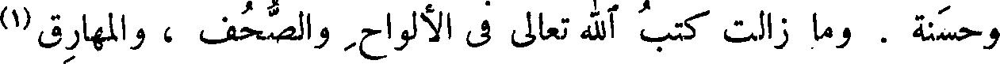
وحسنة . وما زالت كتب الله تعالى فى الألواح والصحف ، والمهارق (1)
File: 000920.gt.txt (if the image is defective, simply delete all Arabic text and the line will be excluded)
والمصاحف . وقال الله عز وجل ( الم ذلك الكتاب لا ريب فيه ) .
File: 000921.gt.txt (if the image is defective, simply delete all Arabic text and the line will be excluded)

وقال ( ما فرطنا فى الكتاب من شيء) ، ويقال لأهل التوراة والإنجيل :
File: 000922.gt.txt (if the image is defective, simply delete all Arabic text and the line will be excluded)
( مواصلةالسير فى خدمة العلم )
File: 000923.gt.txt (if the image is defective, simply delete all Arabic text and the line will be excluded)

أهل الكتاب .
File: 000924.gt.txt (if the image is defective, simply delete all Arabic text and the line will be excluded)

وينبغى أن يكون سبيلنا لمن بعدنا ، كسبيل من كان قبلنا فينا . على
File: 000925.gt.txt (if the image is defective, simply delete all Arabic text and the line will be excluded)

أنا وقد وجدنا من العبرة أكثر مما وجدوا ، كما أن من بعدنا يجد من العبرة
File: 000926.gt.txt (if the image is defective, simply delete all Arabic text and the line will be excluded)

لنسخته . فقال ابن الجهم : لكنى ما رغبنى فيه إلا الذى زهدك فيه ؛ وما
File: 000927.gt.txt (if the image is defective, simply delete all Arabic text and the line will be excluded)

قرأت قط كتابا كبيرا فأخلانى من فائدة ، وما أحصى كم قرأت من صغار
File: 000928.gt.txt (if the image is defective, simply delete all Arabic text and the line will be excluded)
الكتب فخرجت منها كما دخلت .
File: 000931.gt.txt (if the image is defective, simply delete all Arabic text and the line will be excluded)
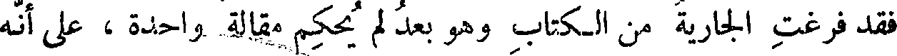
فقد فرغت الجارية من الكتاب وهو بعد لم يحكم مقالة واحدة ، على أنه
File: 000932.gt.txt (if the image is defective, simply delete all Arabic text and the line will be excluded)

حر مخير ، وتلك أمة مقصورة ، وهو أحرص على قراءة الكتاب من سلمويه
File: 000933.gt.txt (if the image is defective, simply delete all Arabic text and the line will be excluded)
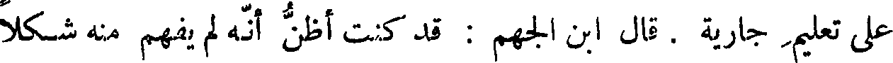
على تعليم جارية . قال ابن الجهم : قد كنت أظن أنه لم يفهم منه شكلا
File: 000934.gt.txt (if the image is defective, simply delete all Arabic text and the line will be excluded)

واحدا ، وأراك تزعم أنه قد فرغ من مقالة ! ! قال العتبى : وكيف ظننت
File: 000935.gt.txt (if the image is defective, simply delete all Arabic text and the line will be excluded)

به هذا الظن ، وهو رجل ذو لسان وأدب ؟ قال : لأنى سمعته يقول لابنه :
File: 000936.gt.txt (if the image is defective, simply delete all Arabic text and the line will be excluded)

كم أنفقت على كتاب كذا ؟ قال : أنفقت عليه كذا، [قال(2)] : إنما رغبنى
File: 000937.gt.txt (if the image is defective, simply delete all Arabic text and the line will be excluded)

فى العلم أنى ظننت أنى أنفق عليه قليلا وأكتسب كثيرا ، فأما إذا صرت أنفق
File: 000938.gt.txt (if the image is defective, simply delete all Arabic text and the line will be excluded)

الكثير ، وليس فى يدي إلا المواعيد ، فإنى لا أريد العلم بشيء ! !
File: 000939.gt.txt (if the image is defective, simply delete all Arabic text and the line will be excluded)
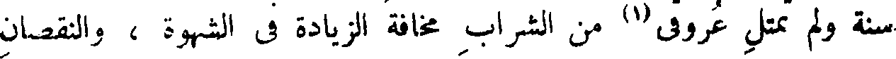
سنة ولم تمتل عروقى (1) من الشراب مخافة الزيادة فى الشهوة ، والنقصان
File: 000940.gt.txt (if the image is defective, simply delete all Arabic text and the line will be excluded)

من العزم - أليس (2) فى ذلك ما يقطع الدواعى ، ويسكن الحركة إن
File: 000941.gt.txt (if the image is defective, simply delete all Arabic text and the line will be excluded)

هاجت ؟ ! قال : قلنا : صدقت . قال : فإنى بعد جميع ما وصفت لكم ،
File: 000942.gt.txt (if the image is defective, simply delete all Arabic text and the line will be excluded)

لأسمع نغمة المرأة فأظن مرة أن كبدى قد ذابت ، وأظن مرة أنها قد
File: 000943.gt.txt (if the image is defective, simply delete all Arabic text and the line will be excluded)
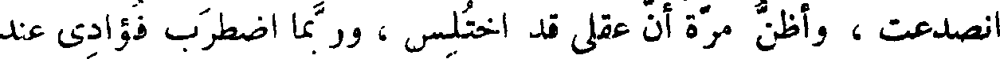
انصدعت ، وأظن مرة أن عقلى قد اختلس ، وربما اضطرب فؤادى عند
File: 000944.gt.txt (if the image is defective, simply delete all Arabic text and the line will be excluded)

ضحك إحداهن ، حتى أظن أنه قد خرج من فمى ، فكيف ألوم علين
File: 000945.gt.txt (if the image is defective, simply delete all Arabic text and the line will be excluded)

غيرى ؟ !
File: 000946.gt.txt (if the image is defective, simply delete all Arabic text and the line will be excluded)

فإن كان - حفظك الله تعالى - قد صدق على نفسه فى تلك الحال ،
File: 000947.gt.txt (if the image is defective, simply delete all Arabic text and the line will be excluded)
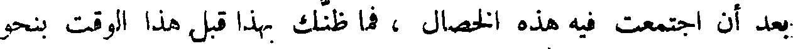
بعد أن اجتمعت فيه هذه الخصال ، فما ظنك بهذا قبل هذا الوقت بنحو
File: 000948.gt.txt (if the image is defective, simply delete all Arabic text and the line will be excluded)
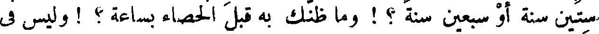
ستين سنة أو سبعين سنة ؟ ! وما ظنك به قبل الخصاء بساعة ؟ ! وليس فى
File: 000949.gt.txt (if the image is defective, simply delete all Arabic text and the line will be excluded)
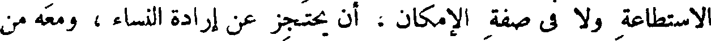
الاستطاعة ولا فى صفة الإمكان ، أن يحتجز عن إرادة النساء ، ومعه من
File: 000950.gt.txt (if the image is defective, simply delete all Arabic text and the line will be excluded)

الحاجة إليهن والشهوة لهن هذا المقدار ! الله تعالى أرحم بخلقه ، وأعدل على
File: 000951.gt.txt (if the image is defective, simply delete all Arabic text and the line will be excluded)
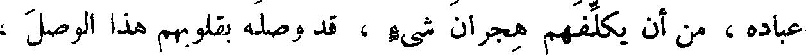
عباده ، من أن يكلفهم هجران شيء ، قد وصله بقلوبهم هذا الوصل ،
File: 000952.gt.txt (if the image is defective, simply delete all Arabic text and the line will be excluded)

وأكده هذا التأكيد .
File: 000953.gt.txt (if the image is defective, simply delete all Arabic text and the line will be excluded)

وقد خصى نفسه من الصابئين رجال ، قد عرفناهم بأسمائهم وأنسابهم ،
File: 000954.gt.txt (if the image is defective, simply delete all Arabic text and the line will be excluded)
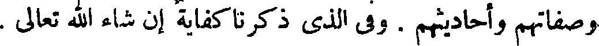
وصفاتهم وأحاديثهم . وفى الذى ذكرنا كفاية إن شاء الله تعالى .
File: 000955.gt.txt (if the image is defective, simply delete all Arabic text and the line will be excluded)

( استئذان عثمان بن مظعون في الخصاء)
File: 000956.gt.txt (if the image is defective, simply delete all Arabic text and the line will be excluded)

وقد ذ كر أن عثمان بن مظعون ، استأذن النبى صلى الله عليه وسلم
File: 000957.gt.txt (if the image is defective, simply delete all Arabic text and the line will be excluded)

فى السياحة فقال : « سياحة أمتى الجماعة » . واستأذنه فى الخصاء فقال :
File: 000958.gt.txt (if the image is defective, simply delete all Arabic text and the line will be excluded)

وقالوا : ومتى كان الأديب (1) جامعا بارعا ، وكانت مواريثه كتبا
File: 000959.gt.txt (if the image is defective, simply delete all Arabic text and the line will be excluded)

بارعة وآدابا جامعة ، كان الولد أجدر أن يرى التعلم حظا ، وأجدر أن
File: 000960.gt.txt (if the image is defective, simply delete all Arabic text and the line will be excluded)
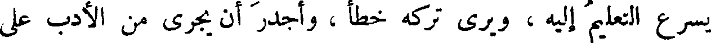
يسرع التعليم إليه ، ويرى تركه خطأ ، وأجدر أن يجرى من الأدب على
File: 000961.gt.txt (if the image is defective, simply delete all Arabic text and the line will be excluded)

طريق قد أنهج له ، ومنهاج قد وطئ له ، وأجدر أن يسرى إليه عرق
File: 000962.gt.txt (if the image is defective, simply delete all Arabic text and the line will be excluded)

من نجله ، وسقى من غرسه ، وأجدر أن يجعل بدل الطلب للكسب(2) ،